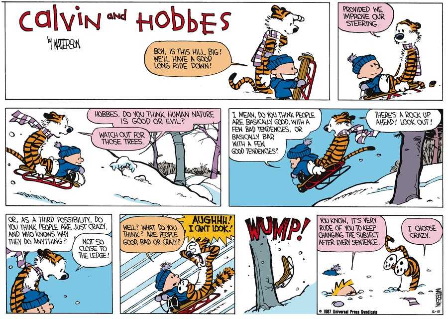
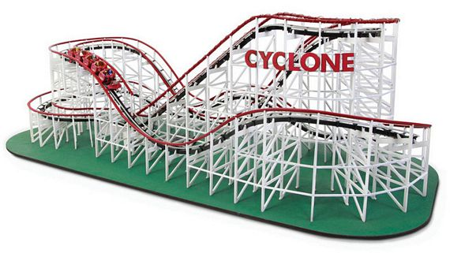
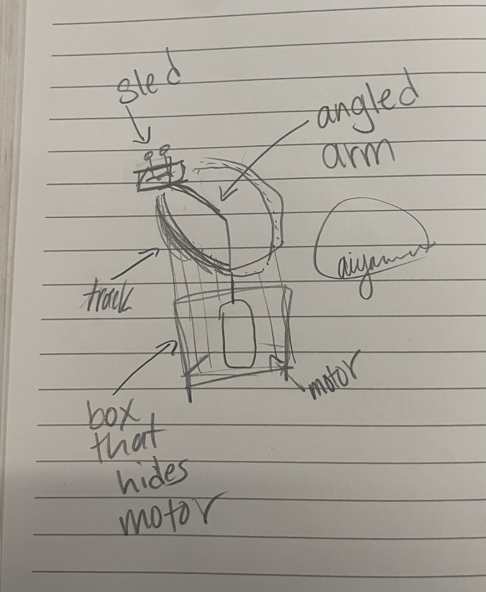
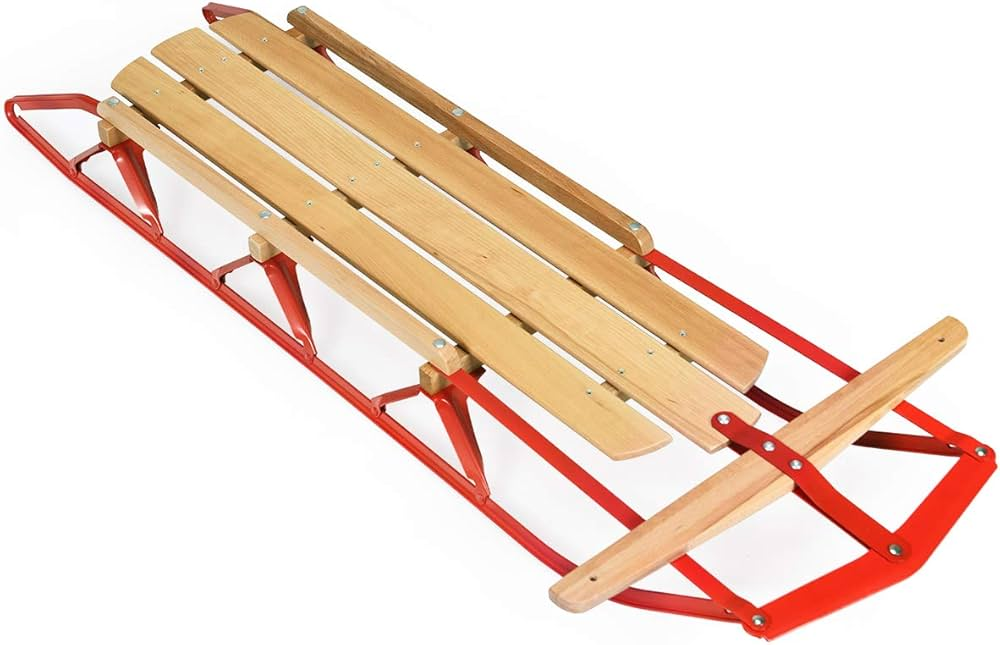

<div class="textcontainer">
<p class="margin"> </p>
<h3>Kinetic Sculpture</h3>
<h4>
<p class = "margin"></p>
A fun fact about me is that I am a cat person. One of my favorite cats is the stuffed tiger from the popular cartoon strip 'Calvin and Hobbes.'
<p class = "margin"></p>
Hobbes and his friend Calvin like to go out and sled sometimes:

I would like to make a kinetic sculpture that captures the essence of these sled rides.
<p class = "margin"></p>
My first idea was to make a desktop rollercoaster:

But this won't work due to my lack of time (and skills!)
<p class = "margin"></p>
Here is my second idea:

I know this drawing is beautiful but I've signed it so you can't steal it.
<p class = "margin"></p>
okay so let's get started recreating this sled:

<p class = "margin"></p>
Okay change of plans, I ended up having to do my kinetic sculpture dead last before catching my train back home away from the lab. I wanted to make something simple, but different than what other people made in the class.
<p class = "margin"></p>
here was my inspiration:
<p class = "margin"></p>
<iframe src="https://assets.pinterest.com/ext/embed.html?id=469992911130463484" height="445" width="345" frameborder="0" scrolling="no" ></iframe>
<p class = "margin"></p>
Here was the file that I made to laser cut my parts out of wood:
<p class = "margin"></p>
<iframe src="https://assets.pinterest.com/ext/embed.html?id=707698528991340037" height="700" width="450" frameborder="0" scrolling="no" ></iframe>
<p class = "margin"></p>
This is those laser cut wood pieces after assemblying them with a screw as their axis:
<p class = "margin"></p>
<iframe src="https://assets.pinterest.com/ext/embed.html?id=707698528991339939" height="700" width="450" frameborder="0" scrolling="no" ></iframe>
<p class = "margin"></p>
I then hot glued them all together to make an interesting shape (a shape that would later come back and bite my butt):
<p class = "margin"></p>
<iframe src="https://assets.pinterest.com/ext/embed.html?id=707698528991339944" height="700" width="450" frameborder="0" scrolling="no" ></iframe>
<p class = "margin"></p>
And here is the final kinetic sculpture with a working gear and movement!
<p class = "margin"></p>
<iframe src="https://assets.pinterest.com/ext/embed.html?id=707698528991339962" height="900" width="450" frameborder="0" scrolling="no" ></iframe>
<p class = "margin"></p>
Is it my best work? No. But i did learn a lot about assembly and that for me, making kinetic sculptures requires a lot of trial and error.
<p class = "margin"></p>
I also learned that if you stay in the lab too late, you'll need to bribe your uber driver to speed to South Station to catch the last train back to Connecticut.
<p class = "margin"></p>
</div>